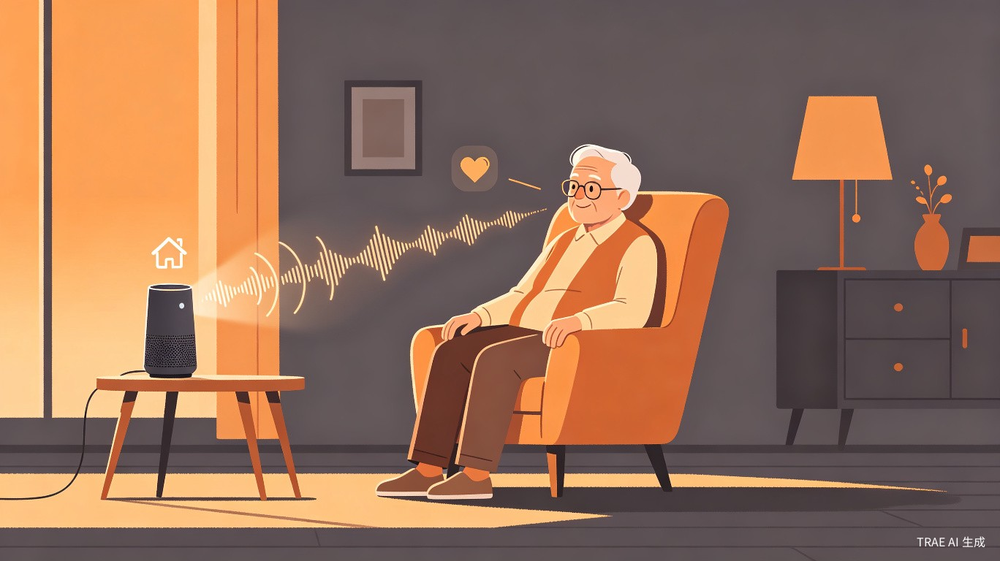
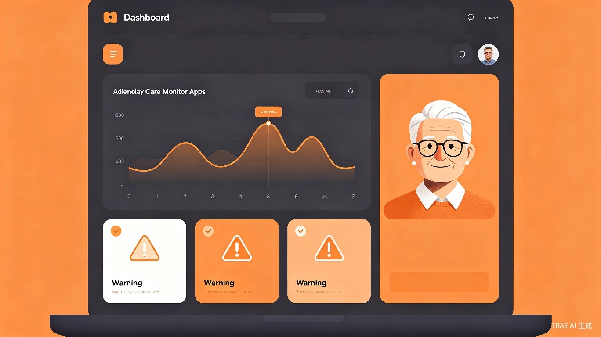

方言情感AI驱动的社区养老主动关怀系统
当老人在慌乱中脱口而出那句乡音，我们的AI不再沉默。
从“被动问答”到“主动情绪预警+精准服务派单”，让技术真正听懂乡音里的温度。
现有适老化AI产品多停留在“通用语音转文字”的浅层交互，无法识别方言语调背后的孤独、焦虑等隐性情绪，导致服务响应被动且缺乏温度，难以真正填补空巢老人的精神与应急双重缺口。
作为AI开发者，我曾参与某适老化语音项目，团队花了三个月优化普通话ASR准确率到98%，上线后却在南方试点社区遭遇滑铁卢。实地走访才发现，老人并非不会说普通话，而是在情绪波动、身体不适时本能回归方言——而我们的模型恰恰在最需要它的时刻失效了。
普通话AI对方言识别率低，老人“不愿说”，技术在最需要时失效。
通用大模型易产生幻觉，服务信息不可靠，威胁老人安全。
现有设备仅能响应明确指令，无法捕捉沉默中的情绪风险。
子女端数据缺乏可行动的情感洞察，只有打卡记录没有温度。
左侧模拟老人用方言说出“屋头好静哦”，右侧实时解析文字内容与情绪标签，用颜色区分情绪强度。
已自动触发“数字邻居”关怀对话，若未缓解将推送网格员上门。
演示说明：本页面为纯前端交互原型，波形与标签为模拟演示，旨在直观展示“机器读懂乡音”的产品理念。
除常规健康数据外，子女可查看父母近7日心情趋势及高风险情绪预警卡片，让关怀从“看数据”升级为“懂心情”。

母亲近3日孤独情绪指数持续高于阈值，建议增加通话频率或预约社区陪聊服务。
检测到焦虑情绪突发峰值，已自动触发“数字邻居”对话，网格员将在30分钟内回访。
每张服务卡片均标注数据来源，经社区服务知识图谱约束校验，避免AI幻觉，确保“每一句承诺都有据可查”。
每日营养餐配送上门，支持方言语音预约，无需记住复杂流程。
社区志愿者陪同就医，从挂号到取药全程协助，子女可实时查看进度。
定期上门清洁与安全隐患排查，服务人员均通过背景审核。
AI主动发起方言对话，识别情绪风险后先“数字陪伴”，再转人工兜底。
本项目精准响应“十五五”规划关于养老与人工智能的多项具体任务。
通过社区嵌入式AI枢纽，实现老人需求在15分钟内响应与派单。
将方言情感计算技术转化为普惠型养老服务，让AI真正服务民生。
低硬件成本+纯前端部署，适配全国老旧小区与县域养老场景。
从语料众筹到可持续运营，四阶段稳步推进，确保技术落地有温度、有底线。
联合试点社区老年大学发起“教AI说家乡话”志愿活动，老人录制带情绪方言短句，志愿者协助标注。TRAE原型作为招募志愿者的可视化说明书。
与街道养老服务中心共建本地服务数据库，AI回复前经知识图谱校验，未命中则转人工，筑牢安全护栏。
高风险情绪先触发“数字邻居”对话，未缓解再推送网格员上门。技术负责“听见”，人负责“接住”。
公益创投覆盖研发 → 政府购买+子女订阅实现平衡 → 开放API接入本地服务商。所有数据对社区公开，接受监督。
精准响应“十五五”关于“发展普惠型养老”与“数字包容性治理”的要求，通过方言情感计算将技术红利转化为可感知的社区温度，助力基层养老从“人力密集型”向“人机协同型”转型。
AI自动完成90%基础咨询与情绪初筛，降低社区人工客服成本60%以上。
通过“情感-服务”双通道数据沉淀，为政府购买服务提供精准决策依据。
“硬件+订阅+政府采购”多元收入，具备在全国老旧小区改造项目中快速复制的能力。
借助TRAE Work，原本需要前后端协作、语音算法工程师参与的复杂系统，现在可由个人在数小时内生成高保真交互原型。这验证了大赛“0技术背景也能做出可体验AI作品”的理念，也为后续吸引非技术背景的社区工作者参与共创提供了低门槛工具。